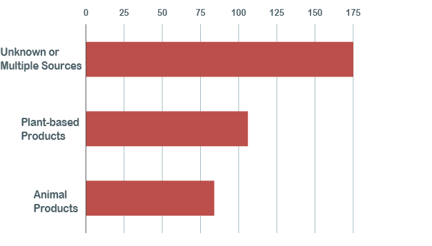
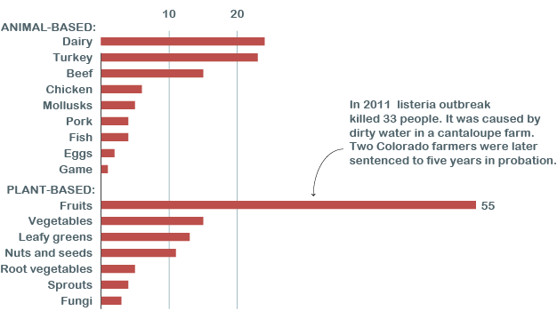
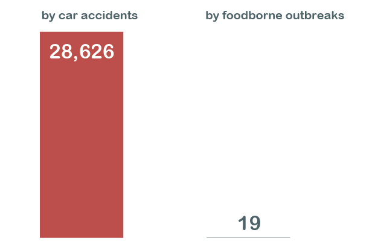
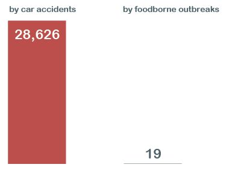

Foodborne Outbreaks
By Paivi Ala-Risku
Published July 28, 2018
Every year, 19 people die because of food that has been contaminated e.g. with viruses and bacteria.
The most of the deadly sources remain unknown
There has been 365 deaths associated with contaminated food between 1998 and 2016. The excact source remains usually unknown.
Food that kills
Number of deaths caused by foodborne outbfreaks from 1998 to 2016.
 SOURCE: Centers for Disease Control and PreventionFruits have been the deadliest
There has been 55 deaths because of contaminated fruits. This might lead you think that fruits are dangerous to eat. Not so much really: the high number is because one single, big outbreak that killed 33 people, making it one of the deadliest foodborne outbreaks ever.
Deaths by animal and plant-based food
Number of people killed by foodborne outbfreaks from 1998 to 2016.
 SOURCE: Centers for Disease Control and PreventionDon't stop eating your lettuce yet
You might be afraid of eating fruits - or anything - after reading this. Don't be. Eating is very safe business, much safer than e.g. traveling by car.
Number of people killed every year
On average from 1998 to 2016
 SOURCES: National Highway Traffic Safety Administration (cars) and Centers for Disease Control and Prevention (food)Don't stop eating your lettuce yet
You might be afraid of eating fruits - or anything - after reading this. Don't be. Eating is very safe business, much safer than e.g. traveling by car.
Number of people killed every year on average from 1998 to 2016
SOURCES: National Highway Traffic Safety Administration (cars) and Centers for Disease Control and Prevention (food)